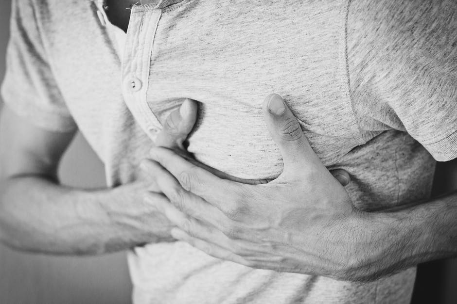

مشکلات مربوط به سلامتی
.مشکلات مربوط به سلامتی ناشی از سبک زندگی و ویژگی های ژنتیکی می باشد که با سبک زندگی درست و سلام و ورزش کردن و تغذیه مفید میتوان تا حدود زیادی جلوی آن را گرفت. از این مشکلات می توان به بیماری عجیب کرونا یاد کرد که بسیار بیماری فراگیری می باشد و موجب بوجود آمدن اپیدمی وسیع در سطح جهان شده است. برای سایر مشکلات هم می توان به مشکلات قلبی و کمر درد اشاره کرد که بسیار فراگیر میباشد
-
کرونا
کرونا بیماری ویروسی میباشد که از طریق تماس اورگانیزم ها و یا از برخورد اورگانیزم ها و اشیا منتقل میشود یعنی اگر با فرد مبتلا فاصله ای کمتر از یک متر داشته باشید و دهان و بینی شما محافظت نشده باشد؛ بیماری به شما منقل میشود و اعلایم آن هم سرفه های خشک و تب میباشد
-

کمر درد
کمر درد مشکل بسیار رایج در بین مردم میباشد و با سبک زندگی و نحوه و عادات مربوط به نشست و برخاست نشات میگیرد و گاهی اوقات از درد در ناحیه سینه و پهلو ها آغاز میشود و گاهی اوقات هم مربوط به اختلالات عصبی میباشد و تاثیر زیادی بر زندگی و کار انسان ها دارد
-

مشکلات قلبی عروقی
مشکل قلبی و عروقی گاهی اوقات ارثی میباشد اما دلیل شایع آن مصرف زیاد چربی و غذا های ناسالم میباشد و در واقع مشکل از جایی شروع میشود که حجم غیر مجاز از چربی رگ های خونرسان به قلب را مسدود میکند و باعث افزایش یا کاهش فشار خون و در موارد پیشرفته منجر به سکته قلبی میشود و اثرات بدی بر همه سیستم های داخلی بدن دارد و از علایم مشکلات قلبی میتوان به احساس سنگینی در ناحیه سینه و درد سینه و همچنین تنگی نفس و درد در دو دست اشاره کرد
راه حل
راه حل مقابله با کرونا رعایت بهداشت فردی و داشتن فاصله حداقل یک متری از افراد و همچنین پوشیدن ماسک و دستکش در مکان های عمومی میاشد و برای از بین بردن کمر درد کاهش وزن و ورزش و از بین بردن عادات بد نشستن و ایستادن و برداشتن اشیا از روی زمین بسیار موثر میاشد. برای مبتلا نشدن به بیماری های قلبی عروقی مدیریت کردن عادات غذایی و مصرف به اندازه غذا های حاوی چربی و هم چنین ورزش مداوم و روزانه و کاهش وزن اضافه بسیار موثر میباشد